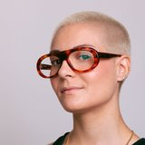

Sobre mí
Soy licenciada en Magisterio y doctora en Educación. Llevo tres años enseñando español como lengua extranjera, y esa experiencia me ha llevado a crear mi propio método de enseñanza.
Actualmente doy clases presenciales de ELE en una universidad de Valencia, y trabajo también con estudiantes particulares que quieren un acompañamiento más personal.
Mis clases se diferencian porque son muy dinámicas. Hablaremos de tus intereses y practicaremos mientras te enseño y te corrijo. También conversaremos sobre lo que pasa en la ciudad, y así aprenderás gramática y vocabulario al mismo tiempo.
Entiendo inglés, así que si te atascas puedo echarte una mano con una palabra o una explicación rápida. Pero hablaremos en español todo el tiempo posible: es la mejor forma de aprender.
Mi método
Un método propio, pensado para que aprender español sea útil desde la primera clase.
Dinámico
Clases activas en las que hablas, participas y practicas, en lugar de solo escuchar explicaciones.
Adaptado a ti
Cada estudiante tiene objetivos y necesidades distintas, y el contenido de las clases se ajusta a ellos.
Con inmersión cultural
El aprendizaje siempre se vincula con la cultura: la lengua se entiende mejor cuando se vive.
Así es una clase con Clara
Todas mis clases parten de una conversación sobre algo real. La gramática aparece cuando la necesitas y la corrección es constante y natural. Este es un ejemplo.
Si necesitas apoyo, hablo inglés, pero en clase hablamos en español el máximo tiempo posible.
Valencia, principios de noviembre. Clara empieza la clase con algo que se ve por la calle.

Clara¿Has visto la decoración de Navidad en las calles? ¡Ya están puestas y solo es 1 de noviembre!Parte de lo real
El punto de partida es algo que has visto o vivido en la ciudad, no una lista de ejercicios.
Corrección constante
Corrijo en el momento y sin cortar la conversación, para que sigas hablando.
La gramática nace del error
La explicación aparece cuando el error la hace necesaria, y se practica enseguida.
Lo que dicen mis alumnos
Opiniones de alumnos de clases particulares.
“Aprender con ella es muy divertido porque el ambiente es relajado, dinámico y Clara es muy creativa: siempre se esfuerza en crear juegos que nos motivan a pensar.”
“Ella me explica la gramática y tenemos conversaciones interesantes! Es como quedar con una amiga y al mismo tiempo estoy aprendiendo un montón de cosas.”
“Clara was super fun to do lessons with. I felt I learnt so much and they were made very enjoyable. I really got to learn the Spanish I wanted to learn and she made me feel like a much more confident speaker.”“Clara enseña con empatía y alegría. Comparte una gran sabiduría del idioma español.”
“Si quieres aprender español, sin duda recomiendo a Clara, sus clases son siempre divertidas y el tiempo pasa volando antes de que te des cuenta.”
“Clara es genial. Ella comenzó a enseñarle español a nuestra hija. Mi hija está muy contenta y después de las clases lo habla, canta canciones y juega.”
Reserva tu clase
Elige el día y la hora que mejor te vengan. Las reservas se sincronizan con mi calendario, así que solo verás los huecos libres.
Verás mis huecos libres al momento.
Reserva tu clase privada- Elige un hueco libre en el calendario.
- Recibirás un correo de confirmación con la información de la clase.
- Ese mismo correo explica cómo se paga y cómo cancelar.
Tarifas
Clase individual: 25 € por hora. Cada alumno adicional paga 5 € más. Empresas: 40 € por hora.
Pago
Se paga después de la clase, por Revolut, PayPal, transferencia o en efectivo. Los datos de pago te llegan en el correo de confirmación.
Cancelación
Puedes cancelar o cambiar tu clase hasta 24 horas antes.
Español para empresas
Formación de español para equipos y profesionales, con el mismo método dinámico y adaptado a las necesidades reales de tu organización.

Formación a medida
Analizo el nivel y los objetivos de tu equipo y diseño un programa específico.
Español profesional
Vocabulario y situaciones del entorno laboral, trabajados desde el contexto cultural en el que se usan.
Experiencia docente
Doctora en Educación, con docencia universitaria presencial en Valencia.
Tarifa para empresas: 40 € por hora.
Pedir una propuestaContacto
¿Quieres clases particulares o una propuesta para tu empresa? Escríbeme y te respondo con un plan.
hola@tudominio.com